NCERT Solutions for Class 8 Science Chapter 9 Reproduction in Animals
Topics and Sub Topics in Class 8 Science Chapter 9 Reproduction in Animals:
| Section Name | Topic Name |
| 9 | Reproduction in Animals |
| 9.1 | Modes of Reproduction |
| 9.2 | Sexual Reproduction |
| 9.3 | Asexual Reproduction |
Reproduction in Animals Class 8 Science NCERT Textbook Questions
Question 1.
Explain the importance of reproduction in organisms.
Answer:
Reproduction is a vital phenomenon on this planet earth which is essential for existence and continuity of life and species on it, generation after generation.
Question 2.
Describe the process of fertilisation in human beings.
Answer:
In the process of fertilisation, sperms come in contact with an ova (egg). One of the sperms may fuse with the egg. The nuclei of the sperm and the egg fuse to form a single nucleus resulting in the formation of a fertilised egg called zygote. In human being, the fertilisation takes place inside the female body, known as internal fertilisation.
Question 3.
Choose the most appropriate answer.
(a) Internal fertilisation occurs
(i) in female body.
(ii) outside female body.
(iii) in male body.
(iv) outside male body.
(b) A tadpole develops into an adult frog by the process of:
(i) fertilisation
(ii) metamorphosis
(iii) embedding
(iv) budding
(c) The number of nuclei present in a zygote is:
(i) none
(ii) one
(iii) two
(iv) four
Answer:
(a) (i)
(b) (ii)
(c) (ii)
Question 4.
Indicate whether the following statements are True (T) or False (F).
- Oviparous animals give birth to young ones.
- Each sperm is a single cell.
- External fertilisation takes place in frog.
- A new human individual develops from a cell called gamete.
- Egg laid after fertilisation is made up of a single cell.
- Amoeba reproduces by budding.
- Fertilisation is necessary even in asexual reproduction.
- Binary fission is a method of asexual reproduction.
- A zygote is formed as a result of fertilisation.
- An embryo is made up of a single cell.
Answer:
- False
- True
- True
- False
- True
- False
- False
- True
- True
- False
Question 5.
Give two differences between a zygote and a foetus.
Answer:
| Zygote | Foetus |
| (i) It is a single celled, i.e., it contains only one cell. | (i) It is multicelled, i.e., it contains many cells. |
| (ii) It is formed by the fusion of male gamete or sperm and female gamete or ova (egg). | (ii) It is formed by the repeated division of the zygote. |
Question 6.
Define asexual reproduction. Describe two methods of asexual reproduction in animals.
Answer:
The mode of reproduction in which only a single parent is involved is called asexual reproduction. In this type of reproduction, sex cells (gametes) are not produced and no fusion of gametes takes place for the reproduction of zygote or offsprings. Asexual reproduction takes place in Amoeba, Hydra, yeast, starfish, sponges, etc.
There are mainly two methods of asexual reproduction:
(i) Binary fission: In binary fission, a single parent cell is divided into two equal individual cells as in Amoeba. It divides into two by division of their bodies, each of them gets one nucleus and develops into separate individual. The figure given below shows how binary fission occurs in Amoeba.
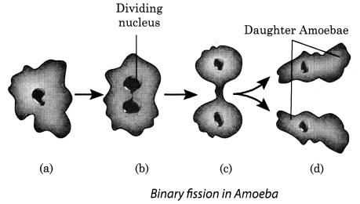
(ii) Budding: In budding, the organism develops a bulge called bud which further develops into an adult organism and separates itself from the parent body to lead an independent life. This type of reproduction is shown in Hydra. The following figure shows budding in Hydra.
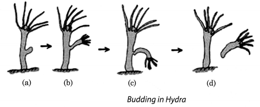
Question 7.
In which female reproductive organ does the embryo get embedded?
Answer:
Uterus
Question 8.
What is metamorphosis? Give examples.
Answer:
The transformation of larva into an adult involving sudden and abrupt changes in the body of an ani¬mal during the life cycle of an invertebrate or amphibian is called metamorphosis. Example, frog and butterfly.
Question 9.
Differentiate between internal fertilisation and external fertilisation.
Answer:
| Internal Fertilisation | External Fertilisation |
| (i) The fusion of male gamete or sperm and female gamete or ova occurs inside the body of a female partner, such as human beings, birds, and mammal. | (i) The fusion of male gamete and female gamete takes place outside the body of a female partner, such as in frog, fish and starfish. |
| (ii) The female partner lays either fertilised eggs or a fully grown young one. | (ii) The female partner discharges unfertilised eggs. |
| (iii) Offsprings have a high chance of survival. | (iii) Offsprings have a low chance of survival. |
Question 10.
Complete the crossword puzzle using the hints given below.
Across
1. The process of the fusion of the gametes.
6. The type of fertilisation in a hen.
7. The term used for bulges observed on the sides of the body of Hydra.
8. Eggs are produced here.
Down
2. Sperms are produced in these male reproductive organs
3. Another term for the fertilised egg.
4. These animals lay eggs.
5. A type of fission in Amoeba.
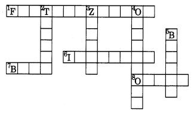
Answer:
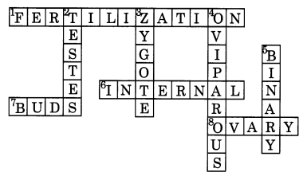
Reproduction in Animals Class 8 Science NCERT Intext Activities Solved
Activity 1 (NCERT Textbook, Page 103)
Visit some ponds or slow-flowing streams during spring or rainy season. Look out for clusters of frog’s eggs floating in water. Write down the colour and size of the eggs.
Solution:
The colour of the eggs is dull white and the size is less than a centimetre.
Activity 2 (NCERT Textbook, Page 105)
Try to collect eggs of the following organisms—frog, lizard, butterfly or moth, hen and crow or any other bird. Were you able to collect eggs of all of them? Make drawings of the eggs that you have collected.
Solution:
The picture of the eggs of some organisms are shown below (Fig. 9.9). You can make drawings of the eggs of other animals if you have collected them.
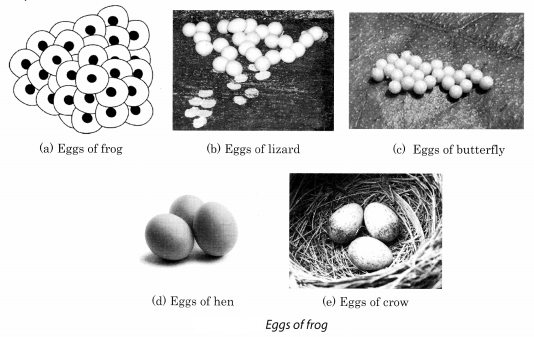
Activity 3 (NCERT Textbook, Page 107)
Get permanent slides of Hydra. Observe them using hand lens or a microscope. Look out for any bulges from the parent body. Count the number of bulges that you see in different slides. Also, note the size of the bulges. Draw the diagram of Hydra, as you see it. Compare it with Fig. 9.10.
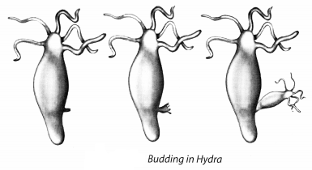
Solution:
We observe that Hydra use regenerative cells for developing new individuals in the process of budding. Also buds develop in Hydra as outgrowth due to repeated cell division at one specific site. Those buds develop into small size individuals and when they are fully matured, they are separated from their parent’s body and become new young ones. This entire process is called budding which is an asexual mode of reproduction in which only a single parent is involved.
NCERT Solutions for Class 8 Science Chapter 9 – 1 Mark Questions and Answers
Question 1.
Choose the most appropriate answer [NCERT]
- Internal fertilisation occurs :
- in female body.
- outside female body
- in male body
- outside male body
- A tadpole develops into an adult by the process of [NCERT]
- fertilisation
- metamorphosis
- embedding
- budding
- The number of nuclei present in a zygote is :
- none
- one
- two
- four
Answer:
- in female body.
- Metamorphosis.
- one
Question 2.
In which female reproductive organ does the embryo get embedded ? [NCERT]
Answer:
Embedding of the embryo takes place in the wall of the uterus.
Question 3.
Name the male reproductive organs.
Answer:
The male reproductive organs are a pair of testis, sperm ducts and a penis.
Question 4.
Name the organ producing the male gametes.
Answer:
Testis produce the male gametes
Question 5.
What are sperms ?
Answer:
The male gametes produced by the testis are known as sperms.
Question 6.
Give the structure of sperm.
Answer:
A sperm has a head, a middle piece and a tail.
Question 7.
Draw a labelled diagram of sperm.
Answer:
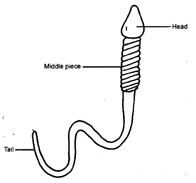
Question 8.
Is the sperm a single cell ?
Answer:
Yes, the sperm is a single cell with all the cell components.
Question 9.
Name the female reproductive organs.
Answer:
The female reproductive organs are a pair of ovaries, oviducts and the uterus.
Question 10.
Name the organ in the female body where development of the baby takes place.
Answer:
Uterus.
Question 11.
Is the egg single cell ?
Answer:
Yes, the egg is also a single cell.
Question 12.
What type of fertilisation takes place in humans and dogs ?
Answer:
Internal fertilisation.
Question 13.
What type of fertilisation takes place in fish ?
Answer:
External fertilisation.
Question 14.
What is an embryo ?
Answer:
The zygote divides repeatedly to form an embryo.
Question 15.
What is a foetus ?
Answer:
The stage of the embryo in which all the body parts are identifiable is called a foetus.
Question 16.
When does the mother giye birth to the young one ?
Answer:
When the development of the foetus is complete, the mother gives birth to the young one.
Question 17.
How much time does the embryo of hen take to develop into a chick ?
Answer:
About three weeks.
Question 18.
What name is given to animals which give birth to young ones ?
Answer:
Viviparous animals.
Question 19.
What name is given to animals which lay their eggs ?
Answer:
Oviparous animals.
Question 20.
Do you think metamorphosis takes place in humans ?
Answer:
No, in humans the body parts similar to the adults are present from the time of the birth.
Question 21.
Define budding.
Answer:
Budding is the type of asexual reproduction in which new individuals develop from the buds.
Question 22.
Name the method by which Amoeba reproduces.
Answer:
Amoeba reproduces by binary fission.
NCERT Solutions for Class 8 Science Chapter 9 – 2 Mark Questions and Answers
Question 1.
All animals finally die, yet the species survives. Give reasons for this.
Answer:
During the life span, all aniamls reproduce to produce offsprings. So, even after they die, the species survives.
Question 2.
What is metamorphosis ? Give examples. [NCERT]
Answer:
The drastic change which takes place during the development of an animal is called metamorphosis. Silkworm and frog undergo metamorphosis.
Question 3.
Differentiate between internal fertilisation and external fertilisation. [NCERT]
Answer:
| Internal Fertilisation | External Fertilisation |
| (a) Fertilisation that takes place inside the female body. (b) Takes place in humans, cows, hens and dogs. |
(a) Fertilisation that takes place outside the female body. (b) Takes place in frogs, fishes and starfish. |
Question 4.
Explain the importance of reproduction in organisms. [NCERT]
Answer:
Reproduction is essential for the survival of organisms. It ensures the continuation of similar kinds of individuals, generation after generation.
Question 5.
Differentiate between sexual and asexual reproduction.
Answer:
| Sexual Reproduction | Asexual Reproduction |
| (a) Reproduction which takes place by the fusion of male and female gametes. (b) Takes place in humans, cow. |
(a) Reproduction in which only a single parent is involved. (b) Takes place in hydra and amoeba. |
Question 6.
How many sperms are produced by the testis ? What is the function of tail in sperms ?
Answer:
Millions of sperms are produced by the testis. The sperms move in oviduct with the help of tail.
Question 7.
What is the function of ovaries ? In human beings, how many eggs are produced every month ?
Answer:
Ovaries produce female gametes called ova. In human beings, a single mature egg is released every month.
Question 8.
If millions of sperms are transferred from the male to the female body, how many fuse with the egg?
Answer:
Only one sperm fuses with the egg.
Question 9.
Draw a diagram to show fertilisation in humans.
Answer:
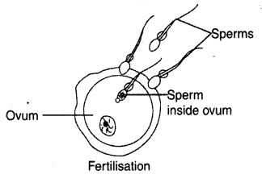
Question 10.
Differentiate between viviparous and oviparous animals.
Answer:
| Viviparous Animals | Oviparous Animals |
| (a) The animals which give birth to young ones. (b) E.g., dog, cow, cat. |
(a) The animals which lay eggs. (b) E.g., frog, butterfly. |
Question 11.
How does the size of the egg varies in different animals ?
Answer:
The egg is very small in humans, much larger in hens and the largest in ostrich.
Question 12.
The different stages of the life cycle of mosquito and silkmoth are given below. Arrange them in proper sequence.
- Mosquito – Pupa —–> Eggs ———> Larva ——-> Adult.
- Silk moth – Larvae ——-> Zygote ——> Cocoon ——> Adult ——–> Caterpillar.
Answer:
- Eggs —–> Larva ——> Pupa ——–> Adult
- Zygote ——> Larvae ——> Caterpillar ——> Cocoon ——-> Adult.
Question 13.
What are hermaphrodite animals and plants ? Give examples.
Answer:
Organisms bearing both male and female sex organs on the same body are known as hermaphrodite animals. Example, pea plant, earthworms.
Question 14.
- When was Dolly bom and for how long did she live ?
- Did Dolly have babies ?
- Answer:
- Dolly was bom on 5th July 1996 and died on 14th February 2003.
- Dolly led a normal life and produced babies of her own through sexual means.
NCERT Solutions for Class 8 Science Chapter 9 – 3 Mark Questions and Answers
Question 1.
What is fertilisation ? Differentiate between external and internal fertilisation. Give two examples of each. [NCT 2006]
Answer:
Fusion of male sperms and female ova is called fertilisation.
Differences:
| External fertilisation | Internal fertilisation |
| When male gamete fuses with the female gamete outside the body of female, e.g., in fishes and frogs. | When male gamete fuses with the female gamete inside the body of female, e.g., in dogs and human beings. |
Question 2.
Describe the process of fertilisation in human beings. [NCERT]
Answer:
During fertilisation, the nuclei of the sperm and the egg fuse to form a single nucleus. This results in the formation of the fertilised egg or zygote. During the process of fertilisation, the new individual inherits some characteristics from the mother and some from the father.
Question 3.
Draw a labelled diagram to show the male reproductive system in human beings.
Answer:
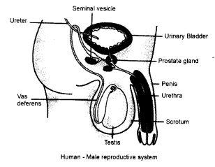
Question 4.
Draw a labelled diagram to show the female reproductive system in human beings.
Answer:
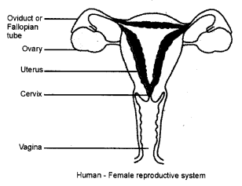
Question 5.
Explain how external fertilisation takes place in frogs.
Answer:
During rainy season, frogs and toads move to ponds. When the male and female come together in water, the female lays hundreds of eggs. A layer of jelly holds the eggs together. The male deposits the sperms over them and fertilisation takes place.
Question 6.
Why animals which undergo external fertilisation lay hundreds of eggs ?
Answer:
These animals lay hundreds of eggs but all the eggs do not fertilise and develop into new individuals. The eggs get exposed to water movement, wind and rainfall. Other animals also feed on eggs. Thus, production of large number of eggs ensure fertilisation of at least few of them.
Question 7.
How does the embryo develop into the foetus ?
Answer:
The embryo develops in the uterus. It gradually develops the body parts such as hands, legs, head, eyes, ears, etc. This stage of the embryo in which all the body parts are identifiable is called a foetus.
Question 8.
Is it possible to find out whether the foetus is healthy or not ?
Answer:
Yes, it is possible to find out whether the foetus is healthy or not by using an ultrasound machine.
Question 9.
Can the technique of ultrasound of foetus be misused ?
Answer:
Yes, sometimes the technique of ultrasound can be misused. It can be used to identify the sex of the foetus which may lead to foeticide.
Question 10.
Show the diagrammatic representation how Dolly was bom ? Name the process also.
Answer:
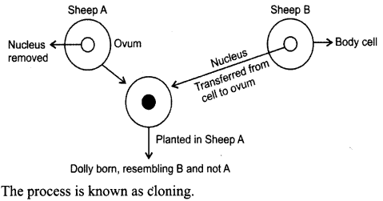
Question 11.
Give the names of the following processes
- Product of fertilisation.
- Baby forming from body cell.
- Changes taking place during the development of an animal.
Answer:
- Zygote
- Cloning.
- Metamorphosis.
Question 12.
What is the function of
- Scrotal sac
- Vas deferens
- Penis in human beings ?
Answer:
- Scrotal sac is a sac in which the testis are placed.
- Vas deferens or sperm duct carry the sperms from the testis to the uretra.
- The penis is the organ that transfers sperms into the vagina of the female body.
NCERT Solutions for Class 8 Science Chapter 9 – 5 Mark Questions and Answers
Question 1.
Indicate whether the following statements are True (T) or False (F). [NCERT]
- Oviparous animals give birth to young ones. ( )
- Each sperm is a single cell. ( )
- External fertilisation takes place in frog. ( )
- A new human individual develops from a cell called gamete. ( )
- Egg laid after fertilisation is made up of a single cell. ( )
- Amoeba reproduces by budding. ( )
- Fertilisation is necessary even in asexual reproduction. ( )
- Binary fission is a method of asexual reproduction. ( )
- A zygote is formed as a result of fertilisation. ( )
- An embryo is made up of a single cell. ( )
Answer:
- F
- T
- T
- F
- T
- F
- F
- T
- T
- F
Question 2.
Define asexual reproduction. Describe two methods of asexual reproduction in animals. [NCERT]
Answer:
Asexual reproduction is the reproduction in which only a single parent is involved. The two methods of asexual reproduction are
- Budding in which new individuals develop from the buds, e.g., in hydra and yeast.
- Binary fission in which an animal reproduces by dividing into two individuals, e.g., in amoeba.
Question 3.
- What is reproduction ?
- Why is reproduction essential ?
- What are the two modes of reproduction in animals ?
- What is cloning ?
Answer:
- Reproduction : Reproduction means producing new individuals of the same kind.
- Reproduction is essential as it ensures the continuation of similar kinds of individuals, generation after generation.
- The two modes of reproduction are — sexual and asexual reproduction.
- Cloning is the production of an identical cell, any other living part or a complete organism.
Question 4.
Why does the child look like the parents ?
Answer:
The process of fertilisation is the meeting of an egg cell from the mother and a sperm cell from the father. So, the new individual inherits some characteristics from the mother and some from the father.
Question 5.
Draw diagram to show the formation of embryo from zygote.
Answer:
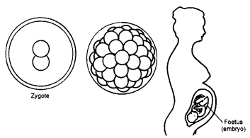
Question 6.
Explain the process of development of fertilised egg.
Answer:
In hens, soon after fertilisation, the zygote divides repeatedly and travels down oviduct. As it travels down, many protective layers are formed around it. The hard shell in a hen’s egg is one such layer. The hen finally lays the eggs. After about three weeks, the eggs are hatched.
Question 7.
- What is meant by in vitro fertilisation ?
- How is it done ?
- What name is given to babies bom through this technique ?
- What may be the possible reasons for adopting this technique ?
Answer:
- The fertilisation which takes place outside the body of mother is known as in vitro fertilisation.
- The freshly released egg from the mother is taken and kept with the sperms from the father in a test-tube with proper nutritional base at suitable temperature. Fertilisation takes place and after the zygote is about a week old it is transfered to the mothers uterus.
- Babies bom under this technique are known as Test-tube babies.
- Possible reasons for adopting this technique are – less number of sperms or blocked fallopian tubes.
Question 8.
Explain how cloning was done to produce Dolly.
Answer:
In cloning, egg from sheep ‘A’ with taken and its nucleus was replaced with a nucleus from body cell of sheep ‘B’. The cell thus produced was implanted in the womb of sheep A where it developes into a normal baby sheep. The baby sheep thus bom was found to be exactly similar to-sheep ‘B’ whose nucleus was taken. Thus, Dolly was bom on 5th July 1996.
Question 9.
Explain binary fission in Amoeba with the help of diagram. [NCT 2011]
Answer:
Amoeba is a unicellular organism, the nucleus of the amoeba gradually divides into two nuclei. Then the cytoplasm also divides and each part gets one nucleus. This is known as binary fission and it asexual reproduction.
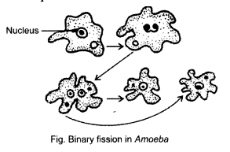
Question 10.
The diagrams is given showing reproduction in an organism. Observe the diagrams and answer the following questions.
- Name the organisms.
- Name the type of reproduction.
- Label the diagram.
- Explain the reproduction process.
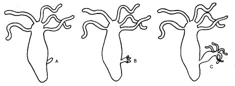
Answer:
- The organism is hydra.
- Asexual reproduction i.e., budding.
- A and B – bud.
C – young hydra. - A small out growth called bud arises on the surface of the parent hydra. The bud develops mouth, tentacles and grows into a tiny hydra. The tiny hydra separates from the parent hydra and develops into an adult.
NCERT Solutions for Class 8 Science Chapter 9 MCQs
Question 1.
Multiple fission is observed in
(a) Amoeba
(b) Bacteria
(c) Hydra
(d) Plasmodium
Answer:
(d)
Question 2.
Yeast reproduces by
(a) sexual reproduction
(b) asexual reproduction
(c) parthenogenesis
(d) none of these.
Answer:
(b)
Question 3.
External fertilisation and external development takes place in
(a) hen
(b) frog
(c) elephant
(d) human beings
Answer:
(b)
Question 4.
Testes are found in
(a) males only
(b) females only
(c) both males and females
(d) none of these
Answer:
(a)
Question 5.
When the embryo can be identified with body parts, it is known as
(a) zygote
(b) foetus
(c) infant
(d) egg
Answer:
(b)
Question 6.
Metamorphosis can be observed in
(a) tadpole
(b) earthworm
(c) hen
(d) Hydra
Answer:
(a)
Question 7.
Internal fertilisation and internal development takes place in
(a) hen
(b) frogs
(c) earthworm
(d) elephants
Answer:
(d)
Question 8.
Ovaries are present in
(a) male’s
(b) females
(c) both males and females
(d) none of these
Answer:
(b)
Question 9.
Breaking of the egg shell and the chick coming out is known as
(a) hatching
(b) incubation
(c) fertilisation
(d) metamorphosis
Answer:
(a)
More CBSE Class 8 Study Material
- NCERT Solutions for Class 8 Maths
- NCERT Solutions for Class 8 Science
- NCERT Solutions for Class 8 Social Science
- NCERT Solutions for Class 8 English
- NCERT Solutions for Class 8 English Honeydew
- NCERT Solutions for Class 8 English It So Happened
- NCERT Solutions for Class 8 Hindi
- NCERT Solutions for Class 8 Sanskrit
- NCERT Solutions